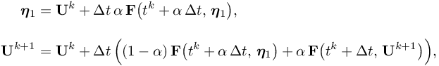

Simulate with complex geometries and complex physics
TOL_T
(control of time step size) error tolerance for computing the temperature using SDIRK2 method in EULERIMPL setting
TOL_T = 1.0e-4
Default: TOL_T = 3.0e-4
The EULERIMPL scheme is a fully implicit method, which does not need to fulfill the CFL condition. Therefore the
time step size is computed dependent on a given tolerance

1.2\end{cases}.
" class="latex" border="0">
The local error estimator  is computed by using an embedded Runge-Kutta method where two results of different order
are compared. Due to the use of the SDIRK2 method (2nd order) the result is based on a method of order .
The other parameters are
Remark: For solving the ODE , the Singly Diagonally Implicit Runge Kutta (SDIRK2) method
is computed by using an embedded Runge-Kutta method where two results of different order
are compared. Due to the use of the SDIRK2 method (2nd order) the result is based on a method of order .
The other parameters are
Remark: For solving the ODE , the Singly Diagonally Implicit Runge Kutta (SDIRK2) method

is used, which is of second order accuracy. That is why it is abbreviated as SDIRK2.
See time_integration_impl, TOL_v and TOL_keps.
| This item is referenced in: | |
|---|---|
| NB_OF_ACCEPTED_REPETITIONS | number of permitted repetitions of substep in EULERIMPL setting |
| SUBSTEPS_IMPL | number of implicit substeps with constant time step size in EULERIMPL setting |
| time_integration_impl | order of implicit time integration scheme in EULERIMPL setting |
| TOL_keps | (control of time step size) error tolerance for computing the k-epsilon model using SDIRK2 method in EULERIMPL setting |
| TOL_T | (control of time step size) error tolerance for computing the temperature using SDIRK2 method in EULERIMPL setting |
| TOL_v | (control of time step size) error tolerance for computing the velocity using SDIRK2 method in EULERIMPL setting |
| EULERIMPL | Higher order implicit Eulerian or ALE motion (recommended among the Euler implementations) |